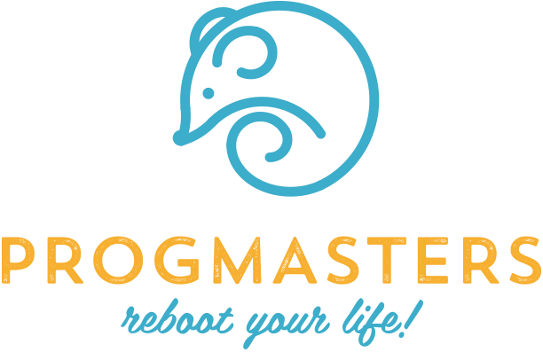

PTE-KTK
(2008 - 2012)
2012-ben végeztem a pécsi közgázon pénzügy és számvitel szakon. Bár a könyvelés soha sem érdekelt igazán, nagyon jó általános rálátást szereztem a tanulmányaim során a gazdaság világára.
Mindemellett szereztem néhány olyan barátot akikkel a mai napig tartjuk egymással a kapcsolatot, és talán ez az egyik legnagyobb hozadéka ennek az időszaknak.
PTE-MIK
(2019 - 2023)
Az IT világából a programozás érdekel a legjobban, ezért a legnagyobb kihívást azok a tárgyak jelentik számomra, melyek inkább a mérnöki vonalhoz kapcsolódnak.
A covid hatására bekövetkező távoktatás számomra a lehető legjobb volt ami történhetett. Bár úgy gondolom, hogy az egyetemeken még nem sikerült megérteni és kihasználni ennek előnyeit, mégis a távoktatás miatt egy másik iskolát is eltudtam végezni párhuzamosan a mérnöki tanulmányokkal.

PROGMasters Bootcamp
(2020)
Életem legjobb befektetése volt elvégezni a Progmasters cég full-stack java developer bootcamp jellegű képzését. Nagyon nehéz időszak volt ez a fél év, mivel párhuzamosan csináltam az egyetemi tanulmányaimmal. Azonban olyan tudást tudtam elsajátítani, amit egyetemen képtelenség és munkakörnyezetben is talán 1-2 év tapasztalat után lehetséges.
A gyakorlat orientált oktatás tökéletesen kiegészítette az addigi, főként elméleti megértésemet a programozási koncepciókról, technikákról.